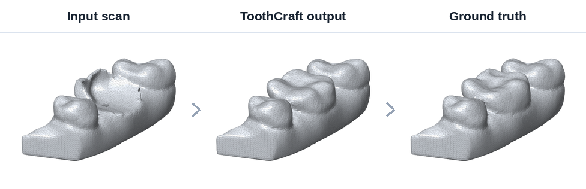
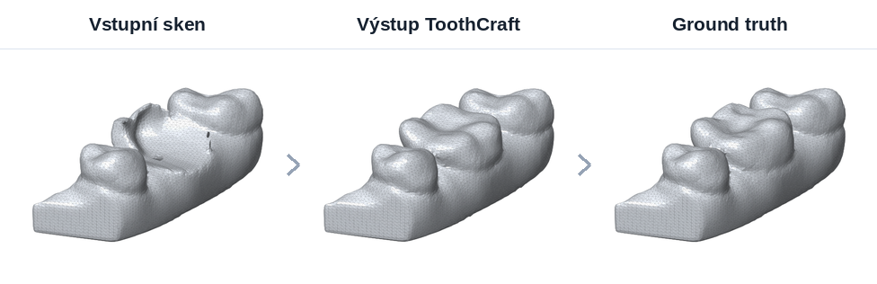
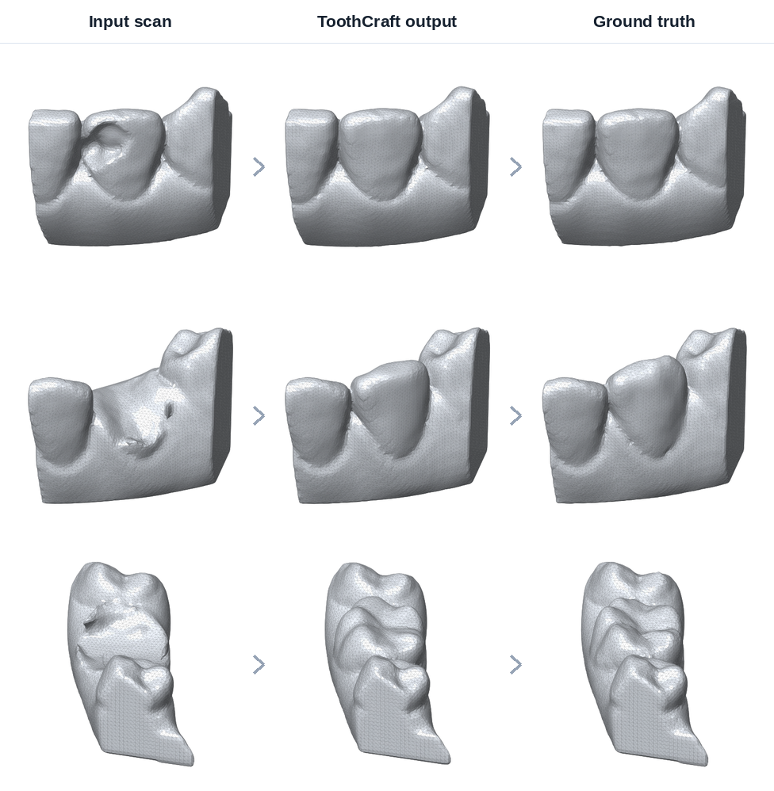

A missing or damaged tooth, designed from the scan.
Chybějící nebo poškozený zub, navržený ze skenu.
Send us a scan of the arch and tell us which tooth. You get back an STL of the tooth, shaped to this patient, fitted to the neighbouring teeth and aligned with your scan, ready to open in your CAD software. Behind it is a neural network trained on thousands of real arches.
Pošlete nám sken čelisti a napište, o který zub jde. Vrátíme vám STL zubu tvarované pro konkrétního pacienta, dosazené k sousedním zubům a zarovnané s vaším skenem, stačí otevřít ve vašem CADu. Stojí za tím neuronová síť natrénovaná na tisících reálných čelistí.


What it can do
Co to umí
Whole crowns on prepared teeth, inlays and onlays, and teeth that are missing altogether, in the upper and the lower jaw. The examples below are real patient scans, not demos: the tooth was removed from the scan, so the original is known and can be put next to what the network generated.
Celé korunky na preparovaných zubech, inlaye a onlaye i zcela chybějící zuby, v horní i dolní čelisti. Níže jsou reálné skeny pacientů, ne ukázky nanečisto: zub byl ze skenu odebrán, takže původní zub známe a můžeme ho postavit vedle toho, co síť vygenerovala.
- Full crowns
- Inlays
- Onlays / overlays
- Missing teeth
- Upper & lower jaw
- Celé korunky
- Inlaye
- Onlaye / overlaye
- Chybějící zuby
- Horní i dolní čelist

What it gets right today
Co už dnes funguje
The shape, size and position of the tooth, the contact with both neighbours, and the overall anatomy of the occlusal surface. The result is a watertight mesh in the coordinate system of your scan.
Tvar, velikost a pozice zubu, kontakt s oběma sousedy a celková anatomie okluzní plochy. Výsledkem je vodotěsná síť v souřadnicích vašeho skenu.
What it does not do yet
Co zatím neumí
Fine surface detail. Fissures and ridges still come out smoothed, so the result is a starting shape for the technician rather than a finished restoration. This is what we are working on right now, and it is exactly where scans from a laboratory would help us most.
On speed: the network itself runs in seconds. The manual preparation and export around it add a few minutes per case. Automating that is routine work, set up once per scanner and export format.
Jemný povrchový detail. Fisury a hrany zatím vycházejí vyhlazené, takže výsledek je spíš výchozí tvar pro technika než hotová náhrada. Přesně na tom teď pracujeme a právě tady by nám skeny z laboratoře pomohly nejvíc.
K rychlosti: samotná síť běží v sekundách. Ruční příprava a export kolem toho přidají několik minut na případ. Automatizace je rutinní práce, nastaví se jednou pro daný skener a formát.
Turn it around yourself
Prohlédněte si to ve 3D
Nine cases you can inspect from any angle: incisors, a canine, a premolar and molars, in both jaws. Pick a tooth by its number. All three views rotate together, so you can put the ToothCraft result straight next to the ground truth for the same scan.
Devět případů, které si můžete prohlédnout z libovolného úhlu: řezáky, špičák, premolár a moláry, v obou čelistech. Vyberte zub podle čísla. Všechny tři pohledy se otáčejí současně, takže výsledek ToothCraft postavíte přímo vedle ground truth k témuž skenu.
Try it on your own cases
Vyzkoušejte to na svých případech
We will run ToothCraft on a few of your cases and send the results back, so you can judge it on your own work. Nothing beyond a standard intraoral scanner export is needed and you do not have to install anything.
Spustíme ToothCraft na několika vašich případech a výsledky vám pošleme zpět, abyste si metodu mohli posoudit na vlastní práci. Nepotřebujete nic nad rámec běžného exportu z intraorálního skeneru a nic nemusíte instalovat.
A trial batch is free: it is a demonstration, and your feedback is worth more to us than a fee. Running this at production volume is a different matter, and goes through the Czech AI Factory (CZAI) programme, which you would join as a partner. Ask us and we will explain what that involves before you send anything.
Zkušební dávka je zdarma, je to ukázka a vaše zpětná vazba má pro nás větší cenu než poplatek. Provoz v produkčním objemu je jiná věc a běží přes program Czech AI Factory (CZAI), do kterého byste vstoupili jako partner. Napište si o podrobnosti, rádi vám je vysvětlíme ještě předtím, než nám cokoli pošlete.
For each case
Ke každému případu
- The arch scan as
.stlor.objThe whole arch, or at least the region around the tooth including both neighbours. - Which tooth should be added or repaired The tooth number (e.g. 36) is enough.
- Which jaw: upper or lower
- Sken čelisti ve formátu
.stlnebo.objCelá čelist, nebo alespoň okolí zubu včetně obou sousedů. - Který zub se má doplnit nebo opravit Stačí číslo zubu (např. 36).
- Která čelist: horní, nebo dolní
If you have it
Pokud to máte
- The opposing jaw scan Lets the method shape the occlusal surface to the bite.
- Tooth and gingiva labels If your software can export which part of the mesh is which tooth, it saves us the manual step. Any format you already use is fine.
- A finished design for the same case Even a handful lets us measure how close we are to your work.
- Sken protilehlé čelisti Umožní metodě tvarovat okluzní plochu podle skusu.
- Označení zubů a gingivy Pokud váš software umí exportovat, která část sítě je který zub, ušetří nám to ruční krok. Postačí formát, který už používáte.
- Hotový návrh ke stejnému případu I pár kusů nám umožní změřit, jak blízko jsme vaší práci.
.stl, aligned to your scan.stl zarovnaný s vaším skenemScans you send us are used only to process your cases. We will not use them to train our models, and we will not publish them, unless you explicitly allow it.
Skeny, které nám pošlete, použijeme výhradně ke zpracování vašich případů. Nepoužijeme je k trénování modelů ani je nezveřejníme, pokud nám to výslovně nedovolíte.
Where to send it
Kam to poslat
Write to either of us. For large files a download link (cloud share) works best.
Napište kterémukoli z nás. U velkých souborů je nejlepší odkaz ke stažení (cloudové úložiště).
- ipukanec@fit.vut.cz Dávid Pukanec
- spanel@fit.vut.cz Michal Španěl